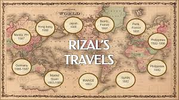

Early Education
|
Rizal Legacy
|
Travels
|
Literary Works
|
Rizal nationalism
|
HomePage
|
Family Tree
|
Europe: Rizal traveled to Europe in 1882 to pursue higher education. He first studied in Madrid, Spain, where he enrolled at the Universidad Central de Madrid to study medicine and the humanities. During his time in Spain, he became actively involved in the Filipino expatriate community and engaged in intellectual and political discussions.
Germany: Rizal also spent time in Germany, particularly in Heidelberg and Wilhemsfeld, where he continued his studies in ophthalmology. It was during his time in Germany that he completed his novel "Noli Me Tangere" and continued his involvement in reformist activities.
>France: Rizal traveled to Paris, France, to further his studies in ophthalmology at the University of Paris (Sorbonne). His experiences in Paris broadened his cultural horizons and exposed him to new ideas and perspectives.
Belgium: While in Europe, Rizal visited Belgium and became acquainted with members of the Belgian intellectual and artistic community. He also attended meetings of the Propaganda Movement, a group of Filipino expatriates advocating for political reforms in the Philippines.

Other European Destinations: Throughout his time in Europe, Rizal traveled to various other cities and countries, including Italy, Switzerland, and Austria. His travels exposed him to different cultures, languages, and political systems, shaping his understanding of colonialism, nationalism, and social justice.